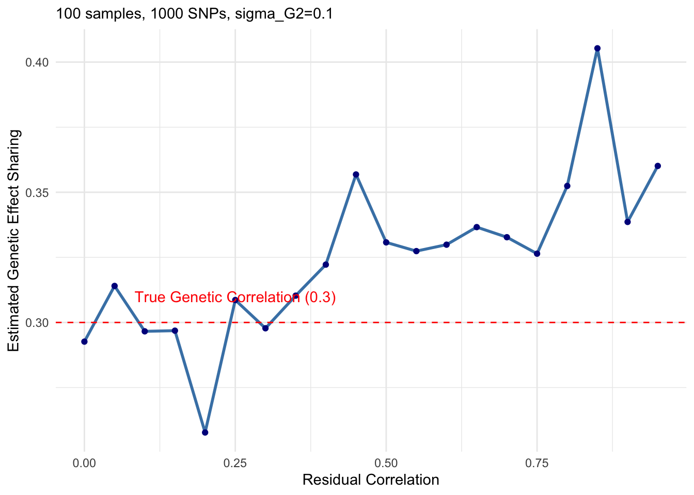
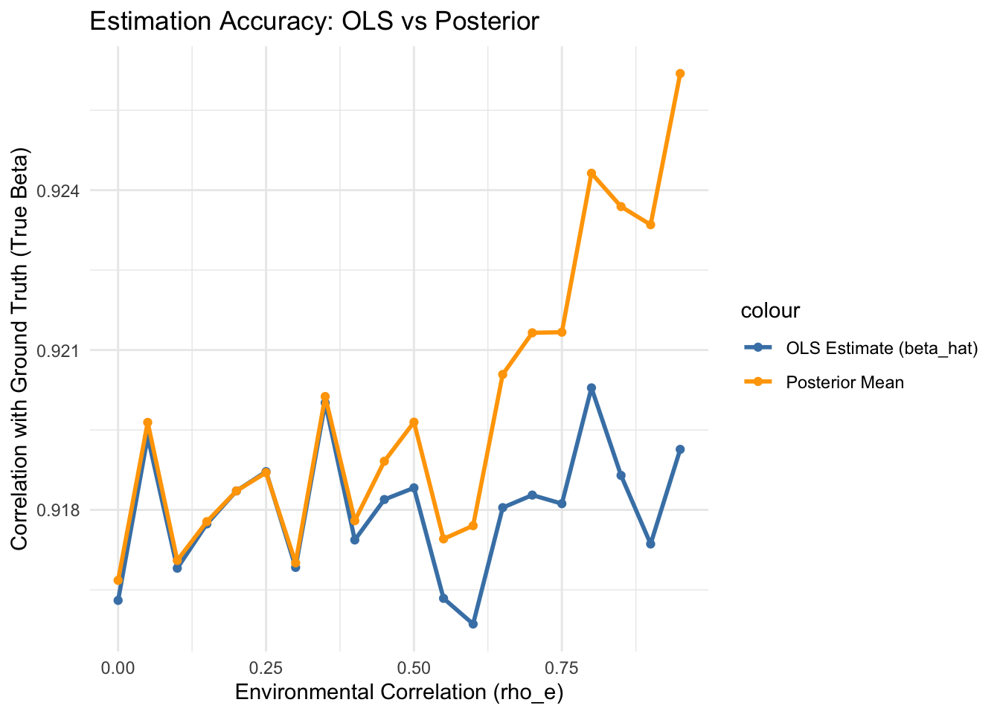
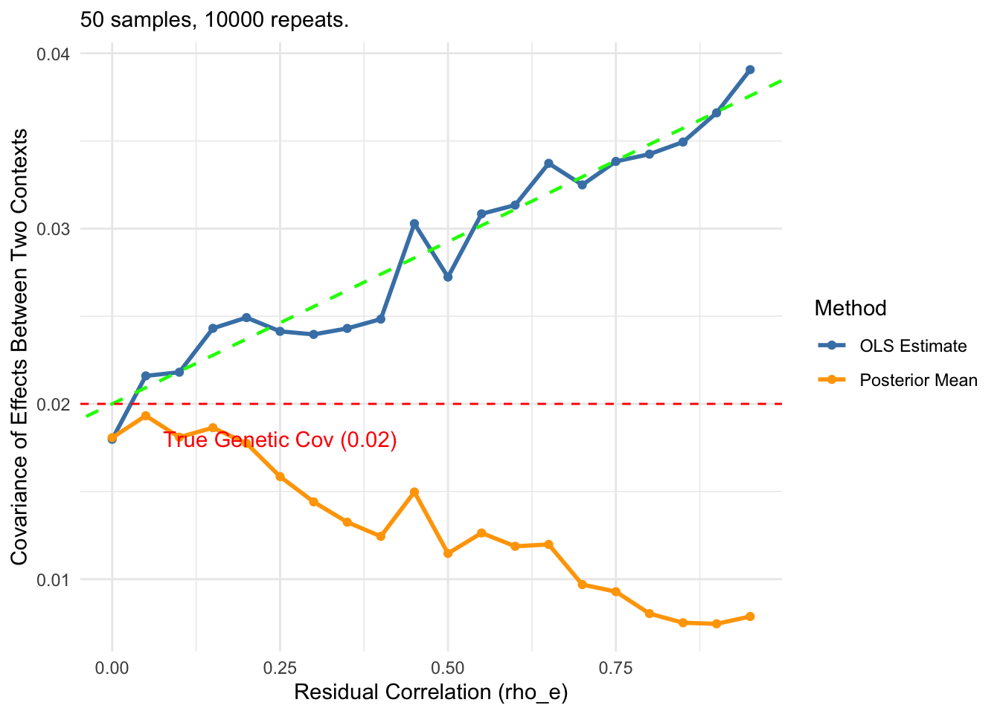
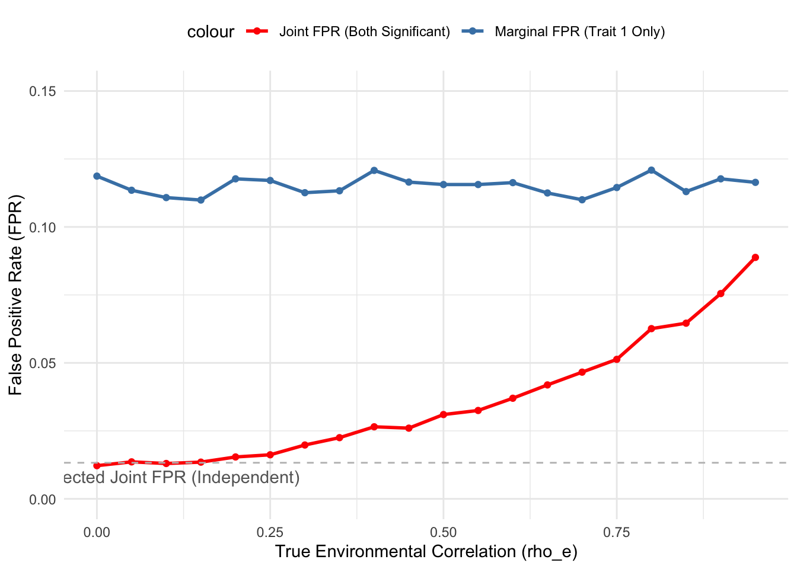
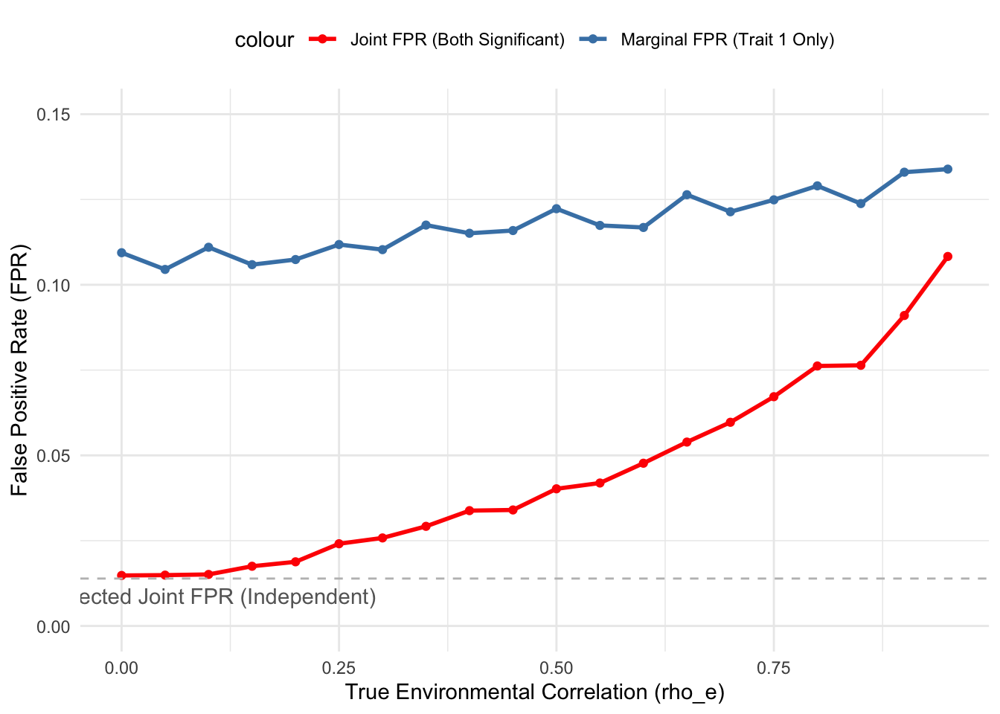
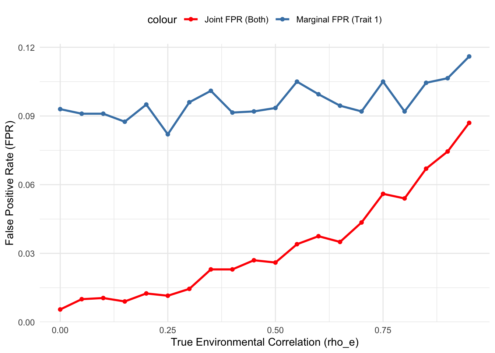

Last updated: 2026-01-26
Checks: 7 0
Knit directory: eQTL_methods/
This reproducible R Markdown analysis was created with workflowr (version 1.7.2). The Checks tab describes the reproducibility checks that were applied when the results were created. The Past versions tab lists the development history.
Great! Since the R Markdown file has been committed to the Git repository, you know the exact version of the code that produced these results.
Great job! The global environment was empty. Objects defined in the global environment can affect the analysis in your R Markdown file in unknown ways. For reproduciblity it’s best to always run the code in an empty environment.
The command set.seed(20250106) was run prior to running
the code in the R Markdown file. Setting a seed ensures that any results
that rely on randomness, e.g. subsampling or permutations, are
reproducible.
Great job! Recording the operating system, R version, and package versions is critical for reproducibility.
Nice! There were no cached chunks for this analysis, so you can be confident that you successfully produced the results during this run.
Great job! Using relative paths to the files within your workflowr project makes it easier to run your code on other machines.
Great! You are using Git for version control. Tracking code development and connecting the code version to the results is critical for reproducibility.
The results in this page were generated with repository version 0c44952. See the Past versions tab to see a history of the changes made to the R Markdown and HTML files.
Note that you need to be careful to ensure that all relevant files for
the analysis have been committed to Git prior to generating the results
(you can use wflow_publish or
wflow_git_commit). workflowr only checks the R Markdown
file, but you know if there are other scripts or data files that it
depends on. Below is the status of the Git repository when the results
were generated:
Ignored files:
Ignored: .DS_Store
Ignored: .RData
Ignored: .Rhistory
Untracked files:
Untracked: data/neuron_stim_genotype_chr9_2e6-3e6.rds
Untracked: data/susie_code.R
Untracked: data/susie_simulation.zip
Untracked: test_matrixeqtl.R
Unstaged changes:
Modified: data/mixedmodel_res_phi0.02.csv
Modified: data/mixedmodel_res_phi0.03.csv
Modified: data/mixedmodel_res_phi0.04.csv
Modified: data/mixedmodel_res_phi0.05.csv
Modified: data/scalability_snp.csv
Modified: data/twostep_res_phi0.02.csv
Modified: data/twostep_res_phi0.03.csv
Modified: data/twostep_res_phi0.04.csv
Modified: data/twostep_res_phi0.05.csv
Note that any generated files, e.g. HTML, png, CSS, etc., are not included in this status report because it is ok for generated content to have uncommitted changes.
These are the previous versions of the repository in which changes were
made to the R Markdown (analysis/mashR_extension.Rmd) and
HTML (docs/mashR_extension.html) files. If you’ve
configured a remote Git repository (see ?wflow_git_remote),
click on the hyperlinks in the table below to view the files as they
were in that past version.
| File | Version | Author | Date | Message |
|---|---|---|---|---|
| Rmd | 0c44952 | Lifan Liang | 2026-01-26 | wflow_publish("analysis") |
| html | b42d374 | Lifan Liang | 2026-01-21 | Build site. |
| Rmd | 03517e0 | Lifan Liang | 2026-01-21 | wflow_publish("analysis") |
\(\pi_0\): the probability that genetic effects sharing is zero (\(\rho_G=0\))
Z: the intermediate binary variable indicating whether the genetic effects are independent or not.
\(G\): a one-dimensional vector of genotypes sampled from standard Normal. The two contexts shared the same set of donors, therefore the same set of genotype vector.
\(\beta\): a vector for genetic effects sampled from a multivariate Normal (MVN). \(\beta_1\) is the genetic effect in the first context, and \(\beta_2\) is the genetic for the second context.
\(\sigma_G\): the standard deviation of genetic effects. Can be called the effect size. The two contexts have the same magnitude of effect size.
\(\rho_G\): the correlation of genetic effects between the two contexts.
\(\sigma_e\): the standard deviation of environmental effects (include measure noise/error?). The two contexts have the same magnitude of environmental effect size.
\(\rho_e\): the correlation of environmenta effects between the two contexts.
\(Y\): a vector of gene expression
\[ Z \sim Bernoulli(1-\pi_0) \]
\[ Z = \begin{cases} 1 & \rho_G>0 \\ 0 & \rho_G=0 \end{cases} \]
\[ G \sim Normal(0,1) \]
\[ \beta \sim MVN(0,\begin{bmatrix} 1 & \rho_G \\ \rho_G & 1 \end{bmatrix} \cdot \sigma_G^2) \]
\[ \epsilon \sim MVN(0, \begin{bmatrix} 1 & \rho_e \\ \rho_e & 1 \end{bmatrix} \sigma_e^2) \]
\[ Y_1 = G \beta_1 + \epsilon_1 \]
\[ Y_2 = G \beta_2 + \epsilon_2 \]
The estimate of genetic effects are generated from ordinary least square (OLS):
\[ \hat\beta_1 = (G^T G)^{-1}G^T Y_1 \]
\[ \hat\beta_2 = (G^T G)^{-1}G^T Y_2 \]
We repeat the procedure above for 100 times, each time with \(n\) donors (by default \(n=100\)). And we obtained 100 estimated genetic effects from the two contexts.
library(MASS)
n <- 50
m <- 10000
sigma_G2 <- 0.1
sigma_e2 <- 1 - sigma_G2
rho_G <- 0.2
G <- matrix(rep(rnorm(n),m), nrow = n, ncol = m)
sim_marker_regression <- function(n = 100, m = 10, sigma_G2 = 0.1, sigma_e2 = 1.0, rho_G = 0.3, rho_e=0.9, G=G) {
# 1. Generate True Betas (Genetic Effects)
# Correlation between trait 1 and trait 2 is 0.5 as per your prompt
U <- matrix(c(1, rho_G, rho_G, 1), nrow = 2)
cov_beta <- U * sigma_G2
betas_true <- mvrnorm(n = m, mu = c(0, 0), Sigma = cov_beta)
colnames(betas_true) <- c("Beta1_True", "Beta2_True")
# 2. Generate Residuals (Environmental Effects)
cov_epsilon <- matrix(c(1, rho_e, rho_e, 1), nrow = 2) * sigma_e2
eps_all <- mvrnorm(n = n * m, mu = c(0, 0), Sigma = cov_epsilon)
# Reshape residuals into n x m matrices
eps1_mat <- matrix(eps_all[, 1], nrow = n, ncol = m)
eps2_mat <- matrix(eps_all[, 2], nrow = n, ncol = m)
# 3. Generate Phenotype Matrices Y1 and Y2 (n x m)
Y1 <- sweep(G, 2, betas_true[, 1], `*`) + eps1_mat
Y2 <- sweep(G, 2, betas_true[, 2], `*`) + eps2_mat
# 4. Regression (OLS estimation)
# Using the fast matrix method: beta_hat = (G'G)^-1 G'Y
beta1_hat <- colSums(G * Y1) / colSums(G^2)
beta2_hat <- colSums(G * Y2) / colSums(G^2)
# 5. Consolidate Results
results <- data.frame(
marker_id = 1:m,
beta1_true = betas_true[, 1],
beta1_est = beta1_hat,
beta2_true = betas_true[, 2],
beta2_est = beta2_hat
)
return(results)
}When samples are completely overlapped, the sharing of environmental effects (residual correlation) will leak into the estimate of sharing of genetic effects.
\[ cov(\hat\beta_1, \hat\beta_2) = \rho_G \sigma_G^2 + \dfrac{\rho_e \sigma_e^2}{G^T G} \]
As derived above, \(\rho_G \sigma_G^2\) represents the true genetic effect sharing. \(\dfrac{\rho_e \sigma_e^2}{G^T G}\) is the proportion of residual correlation added into the estimated sharing of genetic effects. Since is \(G\) is from standard Normal in our case and usually normalized in practice, we can simply approximate the environmental proportion as \(\dfrac{\rho_e \sigma_e^2}{n}\).
Please note that the derivation assumes \(G\) is not a random variable. Hence, all the repeated simulations uses the same \(G\).
As shown in the figure below, blue dots is observed covariance of genetic effect along with different residual correlation. The green line indicates the theoretical trend (similar to linear regression: \(\hat\rho_G=\rho_G \sigma_G^2 + \dfrac{\sigma_e^2}{\sum G_i^2}\cdot \rho_e\). And the red line is the true genetic covariance along)
set.seed(1234)
library(MASS)
library(ggplot2)
n <- 50
m <- 10000
sigma_G2 <- 0.1
sigma_e2 <- 1 - sigma_G2
rho_G <- 0.2
rho_e_values <- seq(0, 0.95, by = 0.05)
estimated_corrs <- numeric(length(rho_e_values))
G <- matrix(rep(rnorm(n),m), nrow = n, ncol = m) # Replicate G for M times for vectorized computation
#G <- matrix(rnorm(n*m), nrow = n, ncol = m)
for (i in seq_along(rho_e_values)) {
sim_res <- sim_marker_regression(
n = n,
m = m,
sigma_G2 = sigma_G2,
sigma_e2 = sigma_e2,
rho_G = rho_G,
rho_e = rho_e_values[i],
G = G
)
estimated_corrs[i] <- cov(sim_res$beta1_est, sim_res$beta2_est)
}
plot_data <- data.frame(rho_e = rho_e_values, est_corr = estimated_corrs)
g_sum_sq <- sum(G[,1]^2)
theoretical_intercept <- rho_G * sigma_G2
theoretical_slope <- sigma_e2 / g_sum_sq
ggplot(plot_data, aes(x = rho_e, y = est_corr)) +
ylim(c(0,0.042)) +
geom_line(color = "steelblue", size = 1) +
geom_point(color = "darkblue") +
geom_hline(yintercept = rho_G*sigma_G2, linetype = "dashed", color = "red") +
geom_abline(
intercept = theoretical_intercept,
slope = theoretical_slope,
color = "green",
linetype = "dashed",
size = 1
) +
annotate("text", x = 0.25, y = rho_G*sigma_G2-2e-3, label = paste0("True Genetic covariance",rho_G*sigma_G2), color = "red") +
labs(
subtitle = paste0(n, " samples, ",m, " repeats, sigma_G2=", sigma_G2, ", rho_G=", rho_G),
x = "Residual Correlation",
y = "Covariance of estimated genetic effects between two contexts"
) +
theme_minimal()Warning: Using `size` aesthetic for lines was deprecated in ggplot2 3.4.0.
ℹ Please use `linewidth` instead.
This warning is displayed once every 8 hours.
Call `lifecycle::last_lifecycle_warnings()` to see where this warning was
generated.
| Version | Author | Date |
|---|---|---|
| b42d374 | Lifan Liang | 2026-01-21 |
Given the prior distribution of true genetic effects and the estimated genetic effects, we recovered the posterior of genetic effects between two contexts and compared how LFSR changes according to the specified residual correlation when the true residual correlation is high (0.9).
Following the MASH paper, the posterior of true genetic effect (\(\tilde\beta\)) can be derived from the estimated genetic effect (\(\hat\beta\)), prior covariance matrix (\(U=\begin{bmatrix} 1 & \rho_G \\ \rho_G & 1 \end{bmatrix} \cdot \sigma_G^2\)), and the residual correlation (\(V=\begin{bmatrix} 1 & \rho_e \\ \rho_e & 1 \end{bmatrix} \cdot \dfrac{\sigma_e^2}{n}\)).
\[ \Sigma_{post} = (U^{-1} + V^{-1})^{-1} \]
\[ E(\tilde\beta|\hat\beta) = \Sigma_{post} V^{-1} \hat{\beta} \]
As a sanity check, we compared the accuracy (correlation with ground truth) of OLS estimator and the posterior mean. As \(\rho_e\) increased, posterior mean have large accuracy gain.
library(MASS)
compute_posterior <- function(U, V, beta_hat) {
Total_Variance <- V + U
W <- U %*% solve(Total_Variance)
mu_post <- W %*% beta_hat
Sigma_post <- U - (W %*% U)
return(list(mu_post = mu_post, Sigma_post = Sigma_post))
}set.seed(1234)
n <- 50
m <- 10000
sigma_G2 <- 0.1
sigma_e2 <- 1 - sigma_G2 # Assuming total variance is 1
rho_G <- 0.2
rho_e_values <- seq(0, 0.95, by = 0.05)
ols_corrs <- numeric(length(rho_e_values))
post_corrs <- numeric(length(rho_e_values))
G <- matrix(rep(rnorm(n), m), nrow = n, ncol = m)
g_sum_sq <- sum(G[,1]^2) # The scaling factor for error variance
# Vectors to store accuracy correlations
acc_ols <- numeric(length(rho_e_values))
acc_post <- numeric(length(rho_e_values))
for (i in seq_along(rho_e_values)) {
rho_e_current <- rho_e_values[i]
sim_res <- sim_marker_regression(
n = n, m = m, sigma_G2 = sigma_G2, sigma_e2 = sigma_e2,
rho_G = rho_G, rho_e = rho_e_current, G = G
)
ols_corrs[i] <- cov(sim_res$beta1_est, sim_res$beta2_est)
U <- matrix(c(sigma_G2, rho_G*sigma_G2, rho_G*sigma_G2, sigma_G2), 2, 2)
scaling <- 1 / g_sum_sq
V <- matrix(c(sigma_e2, rho_e_current*sigma_e2,
rho_e_current*sigma_e2, sigma_e2), 2, 2) * scaling
beta_hat_matrix <- rbind(sim_res$beta1_est, sim_res$beta2_est)
post_res <- compute_posterior(U, V, beta_hat_matrix)
post_corrs[i] <- cov(post_res$mu_post[1, ], post_res$mu_post[2, ])
acc_ols[i] <- cor(sim_res$beta1_est, sim_res$beta1_true)
acc_post[i] <- cor(post_res$mu_post[1, ], sim_res$beta1_true)
}
plot_data <- data.frame(
rho_e = rho_e_values,
OLS_Accuracy = acc_ols,
Posterior_Accuracy = acc_post
)
ggplot(plot_data, aes(x = rho_e)) +
geom_line(aes(y = OLS_Accuracy, color = "OLS Estimate (beta_hat)"), size = 1) +
geom_point(aes(y = OLS_Accuracy, color = "OLS Estimate (beta_hat)")) +
geom_line(aes(y = Posterior_Accuracy, color = "Posterior Mean"), size = 1) +
geom_point(aes(y = Posterior_Accuracy, color = "Posterior Mean")) +
scale_color_manual(values = c("steelblue", "orange")) +
labs(
title = "Estimation Accuracy: OLS vs Posterior",
y = "Correlation with Ground Truth (True Beta)",
x = "Environmental Correlation (rho_e)"
) +
theme_minimal()
However, the covariance of posterior mean will overcorrect the residual correlation as \(\rho_e\) increased. This is due to the law of total variance:
\[ cov(\beta) = E[Var(\beta|\hat\beta)] + Var[E(\beta|\hat\beta)] \]
which can be rewritten as:
\[ \rho_G \sigma_G^2= \Sigma_{post} + cov(\tilde\beta) \]
\(\Sigma_{post}\) will get larger as \(\rho_e\) increased. Since the prior covariance of genetic effects is constant, the increase of \(\Sigma_post\) leads to the decrease of \(cov(\tilde\beta)\).
plot_data <- data.frame(
rho_e = rho_e_values,
OLS_Cov = ols_corrs,
Post_Cov = post_corrs
)
theoretical_intercept <- rho_G * sigma_G2
theoretical_slope <- sigma_e2 / g_sum_sq
ggplot(plot_data, aes(x = rho_e)) +
# OLS Lines
geom_line(aes(y = OLS_Cov, color = "OLS Estimate"), size = 1) +
geom_point(aes(y = OLS_Cov, color = "OLS Estimate")) +
# Posterior Lines
geom_line(aes(y = Post_Cov, color = "Posterior Mean"), size = 1, linetype="solid") +
geom_point(aes(y = Post_Cov, color = "Posterior Mean")) +
# Theoretical OLS Slope (Green Dashed)
geom_abline(intercept = theoretical_intercept, slope = theoretical_slope,
color = "green", linetype = "dashed", size = 0.8) +
# True Genetic Covariance (Red Dashed)
geom_hline(yintercept = rho_G*sigma_G2, linetype = "dashed", color = "red") +
annotate("text", x = 0.25, y = rho_G*sigma_G2 - 0.002,
label = paste0("True Genetic Cov (", rho_G*sigma_G2, ")"), color = "red") +
scale_color_manual(name = "Method",
values = c("OLS Estimate" = "steelblue", "Posterior Mean" = "orange")) +
labs(
subtitle = paste0(n, " samples, ", m, " repeats."),
x = "Residual Correlation (rho_e)",
y = "Covariance of Effects Between Two Contexts"
) +
theme_minimal()
To determine how LFSR was inflated, the parameters between data generation and posterior inference are very different.
During the data generation, we set \(\rho_G=0\) and \(sigma_G^2=0\). The true \(\rho_e\) go through a range of values from 0 to 0.95 to generate 20 different datasets.
During posterior inference, \(\rho_e\) was always set. \(\sigma_G^2=1\) will cause inflation to an extent. But it also reduce the posterior weights on the prior. Hence \(\sigma_G^2\) does not affect the results too much. The key setting is the prior covariance of genetic effect (\(\rho_G\)). Before introducing a mixture of two settings of \(\rho_G\), we need to validate the impact of \(\rho_e\) in the scenario that \(\rho_G=0\) and \(\rho_G>0\) seperately.
We use LFSR<5% as significant and computed the empirical False discovery rates for each value of true \(\rho_e\).
# Simply marginal posterior to compute LFSR
get_lfsr <- function(post_res) {
prob_less_0_1 <- pnorm(0, mean = post_res$mu_post[1,], sd = sqrt(post_res$Sigma_post[1,1]))
lfsr1 <- pmin(prob_less_0_1, 1 - prob_less_0_1)
prob_less_0_2 <- pnorm(0, mean = post_res$mu_post[2,], sd = sqrt(post_res$Sigma_post[2,2]))
lfsr2 <- pmin(prob_less_0_2, 1 - prob_less_0_2)
cbind(lfsr1, lfsr2)
}rho_e_hat_fixed <- 0 # The model will ALWAYS assume independence (Naive)
rho_e_true_values <- seq(0, 0.95, by = 0.05) # The data gets progressively more correlated
marginal_fpr <- numeric(length(rho_e_true_values))
joint_fpr <- numeric(length(rho_e_true_values))
for (i in seq_along(rho_e_true_values)) {
rho_current <- rho_e_true_values[i]
sim_res <- sim_marker_regression(
n = n, m = m, sigma_G2 = 0, sigma_e2 = 1,
rho_G = 0, rho_e = rho_current, G = G
)
U_naive <- diag(1, 2) # Causes inflation but also reduce the weight of the prior
scaling <- 1 / g_sum_sq
V_naive <- diag(sigma_e2, 2) * scaling
beta_hat_matrix <- rbind(sim_res$beta1_est, sim_res$beta2_est)
post_res <- compute_posterior(U_naive, V_naive, beta_hat_matrix)
lfsr <- get_lfsr(post_res)
marginal_fpr[i] <- mean(lfsr[,1] < 0.05)
joint_fpr[i] <- mean(lfsr[,1] < 0.05 & lfsr[,2] < 0.05)
}Given that \(\rho_G=0\), the marginal FPR was inflated because of positive covariance in the prior. The marignal LFSR was not affected by \(\rho_e\). However, the proportion of LFSR being significant in the two contexts together will grow as \(rho_e\) increased.

rho_e_hat_fixed <- 0 # The model will ALWAYS assume independence (Naive)
rho_e_true_values <- seq(0, 0.95, by = 0.05) # The data gets progressively more correlated
marginal_fpr <- numeric(length(rho_e_true_values))
joint_fpr <- numeric(length(rho_e_true_values))
for (i in seq_along(rho_e_true_values)) {
rho_current <- rho_e_true_values[i]
sim_res <- sim_marker_regression(
n = n, m = m, sigma_G2 = 0, sigma_e2 = 1,
rho_G = 0, rho_e = rho_current, G = G
)
U_naive <- matrix(c(1,0.9,0.9,1),2,2) # Causes inflation but also reduce the weight of the prior
scaling <- 1 / g_sum_sq
V_naive <- diag(sigma_e2, 2) * scaling
beta_hat_matrix <- rbind(sim_res$beta1_est, sim_res$beta2_est)
post_res <- compute_posterior(U_naive, V_naive, beta_hat_matrix)
lfsr <- get_lfsr(post_res)
marginal_fpr[i] <- mean(lfsr[,1] < 0.05)
joint_fpr[i] <- mean(lfsr[,1] < 0.05 & lfsr[,2] < 0.05)
}Even when prior correlation was set to 0.9. Marginal LFSR only slightly increased as \(\rho_e\) increased. But the phenomenon of joint false positive becomes more obvious in this scenario.

Combining the two scenarios above, we estimate the posterior with a mixture of two scenarios: (1) genetic effects are independent between contexts (\(\pi_0=0.1, \rho_G=0\)); (2) genetic effects are highly shared between the two contexts (\(\pi_0=0.9, \rho_G=0.9\))
With the increase of \(\rho_e\), the marginal FPR slightly increased, and the proportion of joint FPR (simultaneous false postives in the two contexts) increased substantially.
library(MASS)
library(ggplot2)
library(mvtnorm)
compute_mixture_lfsr <- function(beta_hat_matrix, V_naive, pi_weights, U_list) {
# beta_hat_matrix: 2 x m
# V_naive: 2 x 2 (Likelihood Error)
# pi_weights: Vector of prior weights (e.g., c(0.1, 0.9))
# U_list: List of Prior Covariance Matrices
m <- ncol(beta_hat_matrix)
K <- length(U_list)
# Storage for component-wise stats
log_lik_matrix <- matrix(0, nrow = m, ncol = K)
comp_prob_less_0_trait1 <- matrix(0, nrow = m, ncol = K)
comp_prob_less_0_trait2 <- matrix(0, nrow = m, ncol = K)
# Loop through Mixture Components
for (k in 1:K) {
U_k <- U_list[[k]]
Sigma_D <- U_k + V_naive
log_lik_matrix[, k] <- dmvnorm(t(beta_hat_matrix), mean = c(0,0), sigma = Sigma_D, log = TRUE)
W_k <- U_k %*% solve(Sigma_D)
mu_post_k <- W_k %*% beta_hat_matrix # 2 x m
Sigma_post_k <- U_k - (W_k %*% U_k)
sd_post_k <- sqrt(diag(Sigma_post_k))
comp_prob_less_0_trait1[, k] <- pnorm(0, mean = mu_post_k[1,], sd = sd_post_k[1])
comp_prob_less_0_trait2[, k] <- pnorm(0, mean = mu_post_k[2,], sd = sd_post_k[2])
}
# exp(log_lik + log_prior - max_log_lik) trick for numerical stability
log_weighted_lik <- log_lik_matrix + matrix(log(pi_weights), nrow=m, ncol=K, byrow=TRUE)
row_max <- apply(log_weighted_lik, 1, max)
exp_term <- exp(log_weighted_lik - row_max)
gammas <- exp_term / rowSums(exp_term) # m x K matrix of posterior weights
mix_prob_less_0_t1 <- rowSums(gammas * comp_prob_less_0_trait1)
mix_prob_less_0_t2 <- rowSums(gammas * comp_prob_less_0_trait2)
lfsr1 <- pmin(mix_prob_less_0_t1, 1 - mix_prob_less_0_t1)
lfsr2 <- pmin(mix_prob_less_0_t2, 1 - mix_prob_less_0_t2)
return(cbind(lfsr1, lfsr2))
}
set.seed(42)
n <- 50
m <- 2000 # Number of markers
sigma_e2 <- 1
rho_e_true_values <- seq(0, 0.95, by = 0.05)
G <- matrix(rep(rnorm(n), m), nrow = n, ncol = m)
g_sum_sq <- sum(G[,1]^2)
scaling <- 1 / g_sum_sq
U_ind <- diag(1, 2)
U_shared <- matrix(c(1, 0.9, 0.9, 1), 2, 2)
U_list <- list(U_ind, U_shared)
pi_weights <- c(0.1, 0.9) # 90% belief in shared effects
# Storage
res_marginal <- numeric(length(rho_e_true_values))
res_joint <- numeric(length(rho_e_true_values))
for (i in seq_along(rho_e_true_values)) {
rho_current <- rho_e_true_values[i]
# A. Simulate Null Data with True Correlation
cov_e <- matrix(c(1, rho_current, rho_current, 1), 2, 2)
eps <- mvrnorm(n*m, c(0,0), cov_e)
Y1 <- matrix(eps[,1], n, m); Y2 <- matrix(eps[,2], n, m)
denom <- colSums(G^2)
beta_hat <- rbind(colSums(G*Y1)/denom, colSums(G*Y2)/denom)
# B. Naive Likelihood (ignorant of residual correlation)
V_naive <- diag(1, 2) * scaling
# C. Run Mixture Inference
lfsr_mix <- compute_mixture_lfsr(beta_hat, V_naive, pi_weights, U_list)
# D. Calculate FPRs (Threshold 0.05)
res_marginal[i] <- mean(lfsr_mix[,1] < 0.05)
res_joint[i] <- mean(lfsr_mix[,1] < 0.05 & lfsr_mix[,2] < 0.05)
}
# --- 4. Plotting ---
plot_data <- data.frame(
rho_e = rho_e_true_values,
Marginal = res_marginal,
Joint = res_joint
)
ggplot(plot_data, aes(x = rho_e)) +
geom_line(aes(y = Marginal, color = "Marginal FPR (Trait 1)"), size = 1) +
geom_point(aes(y = Marginal, color = "Marginal FPR (Trait 1)")) +
geom_line(aes(y = Joint, color = "Joint FPR (Both)"), size = 1) +
geom_point(aes(y = Joint, color = "Joint FPR (Both)")) +
scale_color_manual(values = c("red", "steelblue")) +
labs(
x = "True Environmental Correlation (rho_e)",
y = "False Positive Rate (FPR)"
) +
theme_minimal()+
theme(legend.position = "top")
sessionInfo()R version 4.1.2 (2021-11-01)
Platform: x86_64-apple-darwin17.0 (64-bit)
Running under: macOS Big Sur 10.16
Matrix products: default
BLAS: /Library/Frameworks/R.framework/Versions/4.1/Resources/lib/libRblas.0.dylib
LAPACK: /Library/Frameworks/R.framework/Versions/4.1/Resources/lib/libRlapack.dylib
locale:
[1] en_US.UTF-8/en_US.UTF-8/en_US.UTF-8/C/en_US.UTF-8/en_US.UTF-8
attached base packages:
[1] stats graphics grDevices utils datasets methods base
other attached packages:
[1] mvtnorm_1.1-3 ggplot2_4.0.1 MASS_7.3-54 workflowr_1.7.2
loaded via a namespace (and not attached):
[1] Rcpp_1.0.10 RColorBrewer_1.1-3 compiler_4.1.2 pillar_1.11.1
[5] bslib_0.3.1 later_1.3.1 git2r_0.32.0 jquerylib_0.1.4
[9] tools_4.1.2 getPass_0.2-4 digest_0.6.31 gtable_0.3.6
[13] jsonlite_2.0.0 evaluate_1.0.5 lifecycle_1.0.4 tibble_3.3.0
[17] pkgconfig_2.0.3 rlang_1.1.6 cli_3.6.5 rstudioapi_0.17.1
[21] yaml_2.3.11 xfun_0.54 fastmap_1.1.1 withr_3.0.2
[25] dplyr_1.1.2 httr_1.4.7 stringr_1.6.0 knitr_1.50
[29] generics_0.1.4 fs_1.6.2 vctrs_0.6.5 sass_0.4.6
[33] tidyselect_1.2.1 grid_4.1.2 rprojroot_2.1.1 glue_1.8.0
[37] R6_2.6.1 processx_3.8.6 otel_0.2.0 rmarkdown_2.30
[41] farver_2.1.1 callr_3.7.6 magrittr_2.0.4 whisker_0.4.1
[45] scales_1.4.0 ps_1.9.1 promises_1.5.0 htmltools_0.5.9
[49] dichromat_2.0-0.1 httpuv_1.6.10 labeling_0.4.3 S7_0.2.1
[53] stringi_1.7.12 crayon_1.5.3